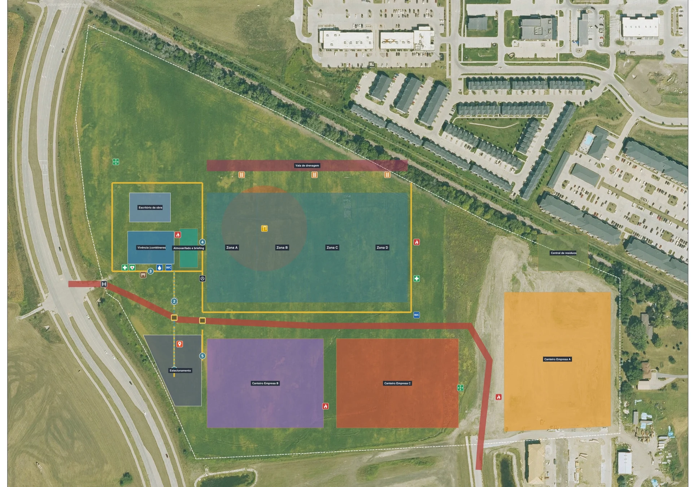
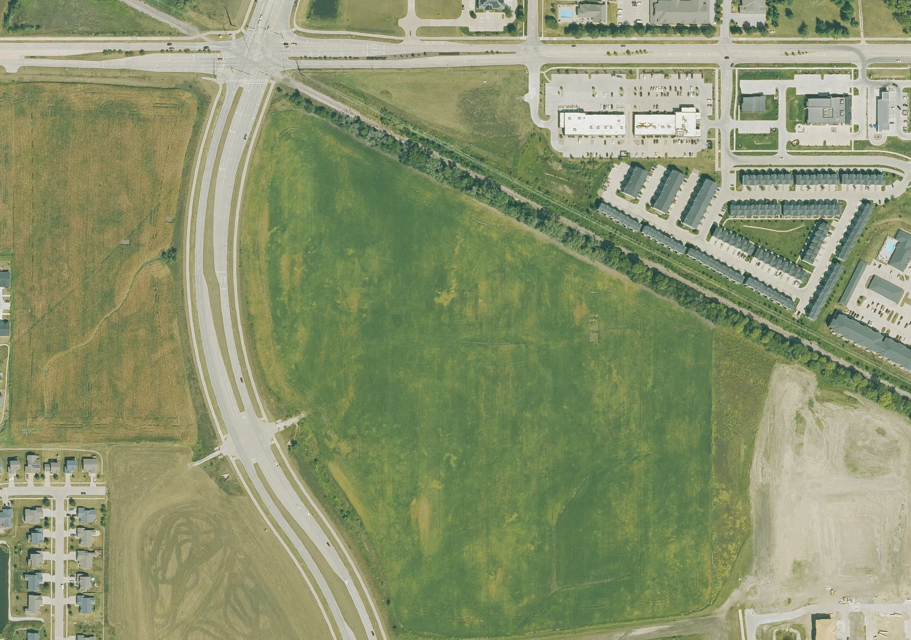

Passo 01 de 04 · Visualizador 3D do canteiro
Das pranchas 2D ao canteiro em 3D no navegador
Você manda as pranchas 2D e a foto do terreno e volta um HTML que abre offline: o canteiro em 3D com guindaste, camadas que ligam e desligam, tour guiado pela rota de visita e seletor de semana.
# PEDIDO Usando as pranchas 2D e a foto do terreno em anexo, monta um HTML 3D interativo do canteiro: camadas que eu ligo e desligo, um tour guiado pela rota de visita e um seletor de semana. Quero abrir offline, sem instalar nada. # FERRAMENTAS Este comando precisa de um chat que execute código (Python) e grave arquivos: o HTML leva dentro dele a foto aérea, os dados do canteiro e a biblioteca 3D (three.js), e isso não se escreve à mão. Se o seu chat não executa código, entregue só o inventário por folha (passo 1 da ETAPA 1) e o pendencias.md, sem coordenadas calibradas, e registre "GeoJSON e HTML não gerados: chat sem execução de código". Precisa ler PDF. Prancha exportada como imagem não tem texto selecionável: renderize cada folha em alta resolução e leia por partes, ampliando. Folha que não abrir fica de fora e vira pendência; não desenhe o que ela teria. O three.js vai embutido no arquivo, de uma cópia local ou baixado uma vez. Link de CDN não serve, porque o arquivo tem que abrir offline. Sem internet e sem cópia local, a ETAPA 1 sai mesmo assim (features.geojson, ortofoto.jpg e pendencias.md); só a ETAPA 2 para, e você me avisa. Para testar, abra o HTML num navegador. Sem navegador, registre "HTML não testado no navegador" em pendencias.md. # CONTEXTO Obra: [NATUREZA DA OBRA — ex.: galpão industrial com quatro zonas de trabalho]. Cabeçalho do HTML: [NOME DO PROJETO — ex.: PROJETO A] · [CLIENTE — ex.: CONSTRUTORA]. Idioma da interface: [IDIOMA — ex.: português]. Pasta de saída: [PASTA — ex.: ./canteiro]. É a mesma dos próximos comandos. Escala para calibrar: [ESCALA — ex.: tamanho do pixel da foto, 0,20 m; ou uma medida conhecida, "a via de caminhões tem 8 m de largura"; ou "use a escala gráfica da prancha"]. Norte: [NORTE — ex.: norte para cima na foto e na prancha; ou "não sei"]. Semanas: [SEMANAS — ex.: 4 semanas, a terceira folha mostra as fases S1 a S4; ou "a prancha não tem fases"]. Modelo de elevação do terreno: [ELEVAÇÃO — ex.: "não tenho"; ou o arquivo do modelo de superfície]. # ENTRADA Arquivos anexados: - plano.pdf: as pranchas 2D do plano de logística do canteiro (ex.: planta sobre a foto aérea, planta sem fundo, fases por semana). Pode ser só imagem. - ortofoto.jpg: a foto aérea do terreno, vista de cima. - pendencias.md, se já existir de uma volta anterior. # TAREFA Faça o PEDIDO em duas etapas, nesta ordem. ETAPA 1 — DIGITALIZAR O PLANO (features.geojson) 1. Leia cada folha e faça o inventário do que ela mostra, com a legenda da própria prancha: limite, zonas de trabalho, vivência, estacionamento, canteiros e estoques, escavações, via de caminhões, passarelas, faixas de pedestres, portaria, catracas, cancelas, portões, cercas, áreas reservadas, pontos de segurança, placas, guindaste, rota de visita e paradas. 2. Alinhe a prancha à foto por pontos que aparecem nas duas (cantos do limite, cruzamentos de via) e calibre com a ESCALA. Coordenadas em metros locais: X para leste, Y para norte, origem declarada. Copie a foto para a [PASTA] como ortofoto.jpg. No topo do arquivo, grave "meta" com estas chaves, com estes nomes: ortho ("ortofoto.jpg"), gsd_m (metros por pixel da foto), ortho_bbox_m ([xmin, ymin, xmax, ymax] em metros locais: o retângulo que a foto cobre) e baseline_week (0: só a foto). 3. Uma feição por elemento. Em properties, com estes nomes, porque os próximos comandos leem por eles: id (prefixo por tipo + número, ex.: ZON-A, WLK-01, CRN-01), name, layer (boundary, campus, zones, welfare, compound, excavation, haul_route, walkways, safety, access, fences, reserved, signage, cranes, visit_route, ifc_context), kind (ex.: tower_crane, pedestrian_walkway, turnstile, security_gate, crossing_gate, ped_crossing, haul_road, work_zone, fire_point, first_aid, aed, assembly_point, route_stop), week (inteiro), caption (frase curta da ficha e do tour), source (folha da prancha, "informado" ou "SUPOSIÇÃO") e os campos do tipo: height (m, extrusão), width_m, barrier_side (none, left, right ou both), barrier_type, direction (one-way ou two-way), radius_m, height_m e rotation_deg (guindaste), stop_no e target (parada: número e id do alvo), purpose (área reservada), levels (andares de contêineres). 4. A rota de visita segue as passarelas. Cada parada tem número e uma legenda do que o visitante faz ali (ex.: "Passe pelas catracas. Pedestres nunca usam a via de caminhões."). 5. A semana de cada item vem da folha de fases. Item sem fase na prancha leva semana adotada como SUPOSIÇÃO. ETAPA 2 — CANTEIRO 3D (canteiro_3d.html) Um HTML só, gerado por script a partir do features.geojson, com o three.js, a foto e o GeoJSON embutidos. Abre com dois cliques, sem internet, sem servidor e sem instalar nada. Tem: - a foto aérea como chão; terreno plano, salvo se vier o modelo de elevação; - zonas e áreas como blocos translúcidos; via e passarelas no chão, com setas de sentido e barreiras; cercas, placas e pontos de segurança como ícones; - vivência e canteiro como prédios de contêineres gerados, com o número de andares da prancha; - guindaste de torre modelado (mastro e lança), com o raio de giro numa camada própria; - camadas que ligam e desligam, com "Ocultar tudo". Lista de referência, ajuste ao seu canteiro: Limite do canteiro, Galpão (projeto), Zonas de trabalho, Vivência e estacionamento, Canteiros e estoques, Escavação, Via de caminhões, Passarelas de pedestres, Segurança e emergência, Acessos, Cercas e tapumes, Áreas reservadas, Sinalização, Guindaste, Raio de giro (exclusão), Rota de visita e paradas, Contexto (volumetria). Volume da obra e de contexto só entra se a prancha mostrar ou se vier o arquivo de volumetria. Camada sem item aparece apagada ou fica fora; - ficha ao clicar num item: nome, camada, tipo, semana, legenda, medidas e source, com um botão para aproximar; - seletor de semana: a semana 0 mostra só a foto, o terreno como foi capturado; cada semana mostra o que já está implantado até ela; - tour guiado: play e pausa, a câmera anda pela rota de visita e para em cada parada com a legenda; - modos Esquema (planta) e Detalhado (cada elemento vira modelo 3D: portão, catraca, cancela) e vistas 3D e Topo; - bússola com o norte e escala gráfica em metros; - painel "Verificação do layout" com os avisos que o script achou ao montar (ex.: ponto de incêndio sobre a via, item fora do limite, feição que não deu para desenhar). # REGRAS - Nada que a prancha não mostre entra no modelo. Não complete o canteiro com o que "costuma ter". - O que precisou ser adotado (semana, altura, número de andares, raio, altura e posição do guindaste, largura sem cota, sentido de passarela) leva source "SUPOSIÇÃO", entra em pendencias.md com o valor e o motivo e aparece na ficha do item. - Medida vem de cota da prancha ou da calibração. Declare a calibração e o erro nos pontos de controle; não apresente medida tirada da foto como medida de projeto. - O features.geojson é a fonte. Para mudar o 3D, muda o GeoJSON e roda o script de novo. O script nunca descarta feição em silêncio: o que não deu para desenhar vira aviso na Verificação do layout e pendência. - Via e passarela não podem ficar sob o terreno, e o terreno não pode piscar fora da área do canteiro. Confira com a câmera baixa. - Setas de sentido conferidas contra a prancha 2D. - Interface no IDIOMA do CONTEXTO: botões, camadas, ficha, tour e avisos. Rótulo que ficar em outro idioma entra em pendencias.md (L3D-), com onde aparece. - Quem abrir o arquivo vê o canteiro inteiro. No cabeçalho, nas legendas e nos metadados, só os nomes do CONTEXTO. - pendencias.md é acumulado: leia, não apague e acrescente. Prefixos: DIG- (digitalização) e L3D- (HTML 3D). Situação: ABERTA, SUPOSIÇÃO ou RESOLVIDA (com data e fonte). # SAÍDA Na [PASTA]: - features.geojson: a fonte única do canteiro, com as chaves acima. É a entrada dos próximos comandos (o app de layout, as pranchas e o vídeo da rota). - ortofoto.jpg: a foto aérea, o arquivo que meta.ortho aponta. - canteiro_3d.html - pendencias.md, com as entradas DIG- e L3D- acrescentadas. Em work, ao lado da [PASTA]: work/gerar_canteiro_3d.py, o script que gera o HTML. Roda da pasta do projeto, com python work/gerar_canteiro_3d.py, lendo [PASTA]/features.geojson e gravando [PASTA]/canteiro_3d.html; rode de novo sempre que o GeoJSON mudar. Na resposta: o inventário por folha (item, camada, id), a contagem de feições por camada e a lista das SUPOSIÇÕES com o valor de cada uma, para eu confirmar. # CHECAGEM ANTES DE ENTREGAR - Abriu no navegador, sem internet? Gira, as camadas ligam e desligam, o tour anda e para nas paradas, a semana 0 mostra só a foto e as outras mudam o canteiro? Sem erro no console? - O features.geojson tem meta.ortho, meta.gsd_m, meta.ortho_bbox_m e meta.baseline_week, e as properties com os nomes do passo 3? A ortofoto.jpg está na [PASTA]? - A contagem de feições por camada bate com o inventário da prancha? Diferença tem motivo escrito. - Algum item no modelo que não está na prancha? Tire. - Toda feição SUPOSIÇÃO está em pendencias.md e na ficha? - Via ou passarela sob o chão, chão piscando, seta ao contrário da prancha? - Sobrou rótulo fora do IDIOMA na tela? Se sim, está em pendencias.md? - Algum nome além dos do CONTEXTO no HTML ou nos metadados?
O que ele resolve
O layout do canteiro muda toda semana, e cada mudança era redesenhar o PDF. E o canteiro tem que fazer sentido também pra quem nunca pisou na obra, coisa que prancha 2D parada na folha não resolve.
O prompt diz o que entra, o que sai e o que ele recusa: nada que a prancha não mostre entra no modelo, o que precisou ser adotado (semana, altura, raio do guindaste) vira SUPOSIÇÃO no pendencias.md e na ficha do item, e o terreno fica plano se você não mandar o modelo de elevação. Primeiro ele digitaliza o plano num features.geojson, depois gera por script um HTML só, sem instalar nada: o plano em 3D sobre a foto aérea, com galpão, guindaste e raio de giro, canteiros das empresas, via de caminhões e passarelas, em esquema ou detalhado, 3D ou topo, com camadas que ligam e desligam, ficha com o botão de ir até o item, tour guiado pela rota de visita (aqui, 5 paradas), escala e bússola. No topo fica o seletor de semana, e o features.geojson é a entrada do app de layout do passo 2.
O que ele devolve




Saída real do comando · Canteiro 3D em HTML offline · Dados fictícios (PROJETO A)
Macete(ando o apocalipse)
- Esse processo tende a ser mais preciso depois que você configurar as skills e agentes. Te explico como fazer essas coisas na nossa newsletter, o Campo Minado. Só clicar aqui.
- O engenheiro da nova geração é, acima de tudo, responsável. Lembre-se que IA pode cometer erros. Use ela como um facilitador, não como verdade definitiva. O prompt organiza e explicita o cálculo — quem responde pelo número continua sendo você.
- A ficha do guindaste traz lança, altura e a semana em que ele entra. O prompt manda marcar como SUPOSIÇÃO o raio, a altura e a posição que não vieram da prancha e listar no
pendencias.md, mas suposição continua sendo suposição. Confere com a ficha técnica do equipamento que vai de fato pra obra antes de usar o raio de giro pra marcar área de exclusão. - O 3D é montado em cima da foto do terreno. Se a prancha e a foto não batem em escala ou orientação, as zonas caem no lugar errado e ninguém percebe olhando de longe. Compara um elemento que aparece nas duas (a via, o limite do terreno) e confere a escala do rodapé contra uma medida que você conhece.
- O seletor de semana só mostra o que cada item tem marcado de semana. Item sem fase na prancha leva semana adotada, e o prompt manda registrar como SUPOSIÇÃO no
pendencias.md, com o valor e o motivo, mas no 3D ele aparece na semana igual aos outros. Lê as SUPOSIÇÕES e confere a semana de cada item contra o cronograma antes de mostrar o canteiro de uma fase pra alguém. - O idioma da interface é o campo
[IDIOMA]do CONTEXTO, e rótulo que sobrar em outro idioma o prompt manda listar nopendencias.mdcom prefixoL3D-. No exemplo da página, a ficha veio com Layer, Kind e Week e o tour anda com Walking to na tela. Preenche o idioma e lê asL3D-antes de mandar o 3D pra equipe ou pra visita. - Tour bonito não é rota liberada. Quem aprova o caminho da visita é a segurança do trabalho, não o navegador, né.
Cada passo usa o canteiro do anterior
Esse é só um dos prompts que uso no meu dia a dia pra ganhar mais tempo livre.
Posto isso e muito mais no Instagram.